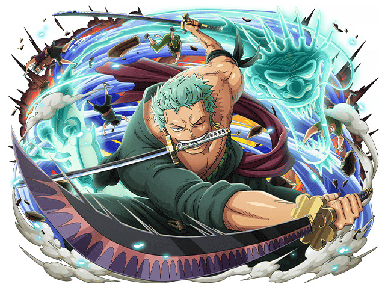

YORICHI
Yoriichi Tsugikuni foi um Caçador de Demônios durante a era Sengoku. Ele foi o criador das técnicas de respiração e seus vários estilos, também sendo o primeiro caçador a ter uma marca.

RONOROA ZORO
Roronoa Zoro, também conhecido como "Caçador de Piratas" Zoro, é o primeiro membro da tripulação Chapeu de Palha e sendo um dos usuarios de espadas mais forte do universo de One Piece.
GIYU TOMIOKA
Giyu Tomioka é um um membro do Esquadrão de caçadores de Onis, e é o atual Hashira da água.
Yuta Okkotsu
YutaOkkotsu é Ele é um jovem cercado e auxiliado pelo espírito amaldiçoado de Rika Orimoto, sua amiga de infância que morreu seis anos antes do enredo e amaldiçoada por causa da promessa de casamento feita quando eram crianças.

KOKUSHIBO
era um dos Hashiras, os pilares da organização de caçadores de demônios, antes de se tornar um demônio